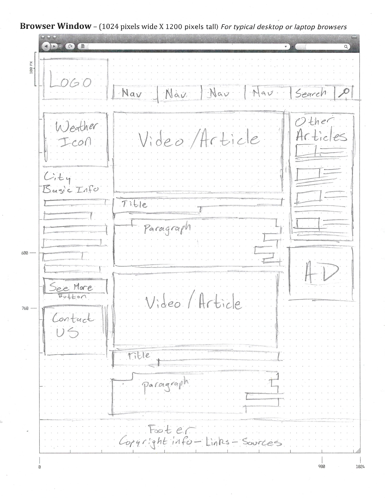
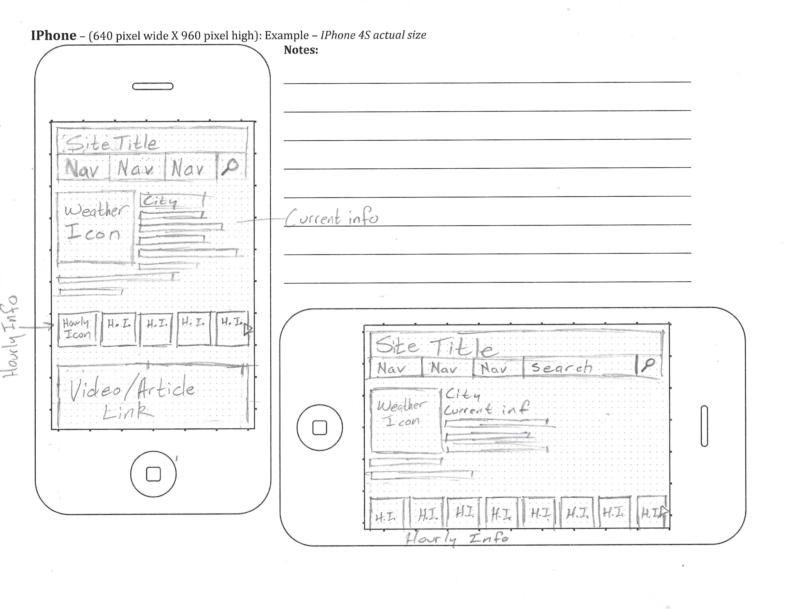
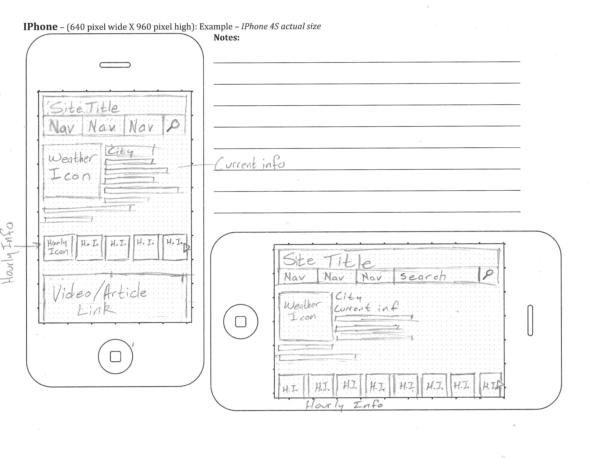

Purpose Statement
Our purpose is to provide accurate weather information and updates to our clients. Many businesses, such as the farming and trucking industry, hinge on how the weather affects their work. Personal plans can be interupted abruptly with a sudden change in the weather. By providing current and upcoming weather information, we help our clients stay ahead of the game.
Audience
Our audience will consist of people ages 16-70 whose plans, personal and work related, depend on knowledge of today's weather. Our site will focus on accessability for such people of various experience as well as for those who are just curious about the weather.
Persona
- Name: Matthew Rodrick
- Age: 47
- Gender: Male
- Demographics:
- Regional Truck Driver for Spud Farms
- Married father of four
- Former mechanic
- B.A. in Marketing
- Goals & Tasks:
- Seeks to provide happy and comfortable lifestyle for his family. Concerned with weather conditions so that he can make his deliveries on time and make it home to spend time with family.
- Spends most of his time driving and loading or unloading deliveries.
- Environment:
- Competent computer user and intermediate internet user. Uses internet for work and entertainment purposes. Uses email extensively to communicate with family and employer. Spends up to 2 hrs/day online.
Sketches
This page will be organized with hierarchy of information in mind. While visually, the articles in the middle will dominate, they will mostly serve to add interest to the page. The vital information, the weather sources, will be listed along the left side of the page where most people will see them relatively quickly. Keeping the consumer's needs in mind, the mobile versions will trim down the fat, moving less pertinent articles below the main content, the weather updates.
 
 Peer Review
Daniel Southwick reviewed my website plan and gave me some feedback. We discussed a little bit about the articles in the center and how they may or may not include videos (depending on the content we will be posting). I also reviewed his website plan, which looks quite promising.